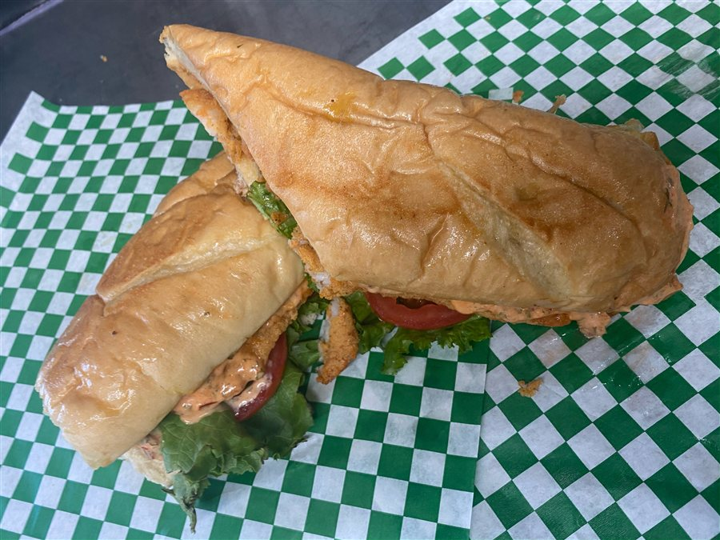

If you are searching for a shrimp po-boy in Southwest Houston, Bayou Fork Kitchen serves ours at 10600 Fondren Road. It starts with golden fried shrimp on toasted French bread, then gets lettuce, tomato and our creamy comeback sauce.
What makes a po-boy different?
A po-boy is a Louisiana sandwich built for a crisp crust, a tender center and plenty of filling. French bread gives it a different bite from an ordinary sub roll. Seafood versions are Gulf Coast favorites, and fried shrimp brings the contrast that makes the sandwich work: crunchy coating, juicy shrimp, cool vegetables and a rich sauce.
How we build our fried shrimp po-boy
Our fried shrimp po-boy keeps the familiar parts in balance. The shrimp are fried until golden, the French bread is toasted, and the lettuce and tomato add freshness. Comeback sauce ties everything together with a creamy, tangy finish without hiding the flavor of the shrimp.
What should you order with it?
Fries are the classic pairing, but the po-boy also works with Southern sides from our full menu. Try mac and cheese when you want a richer plate, greens or green beans for something savory, or dirty rice when you want to keep the meal rooted in Louisiana flavor. If your table wants to share, add Sweet Heat Wings or another seafood plate.
A quick lunch or an easy dinner
The sandwich is a practical choice when you want Cajun flavor without planning a long meal. Stop by the dining room, use the drive-thru during service hours, order pickup, or choose delivery through DoorDash. We are convenient to Brays Oaks, Westbury, Meyerland and nearby Southwest Houston neighborhoods.
Plan your visit
Bayou Fork Kitchen is open Monday through Saturday from 6:30am to 7:30pm and closed Sunday. Find us at 10600 Fondren Road, Houston, TX 77096. Browse the menu before you visit, or order online when you want your po-boy brought to you.